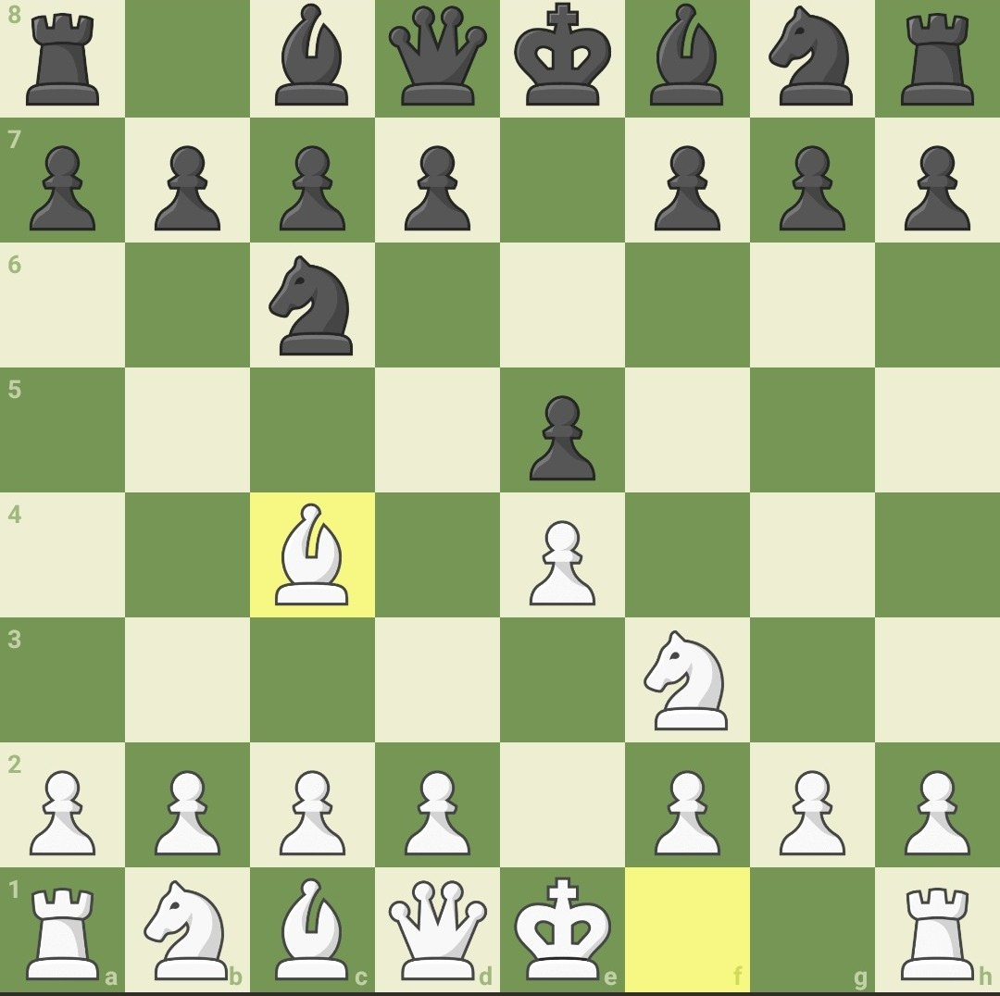
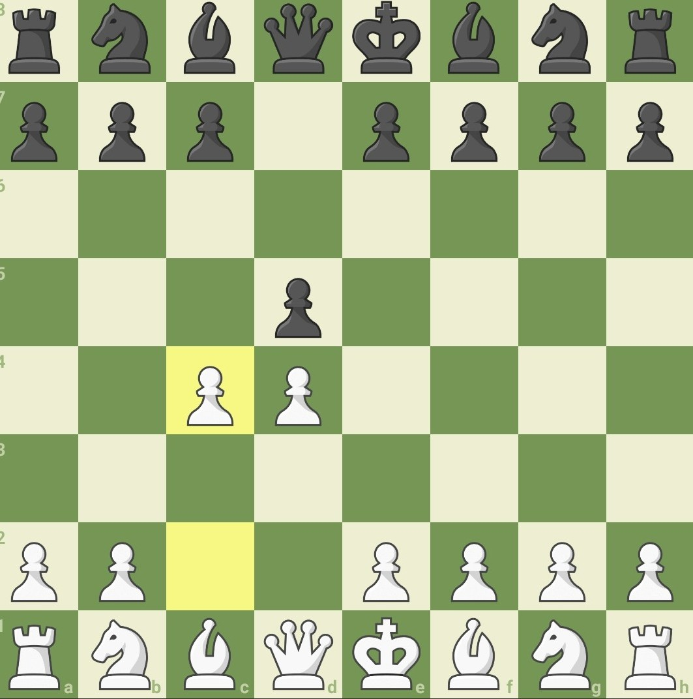
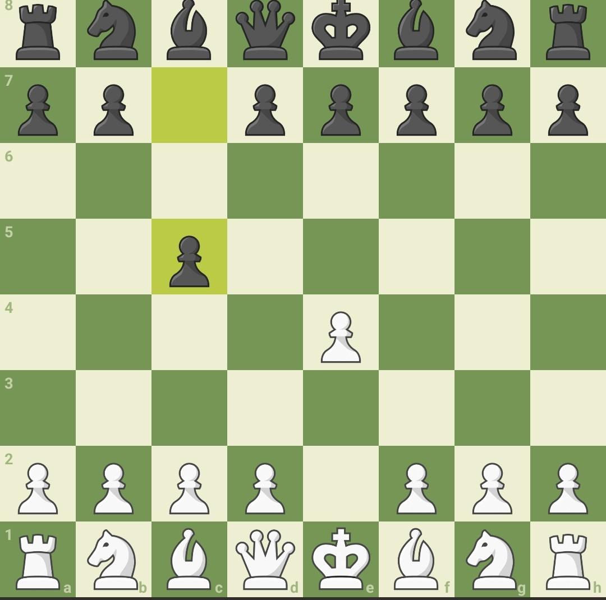

Peón: avanza una casilla hacia adelante y captura en diagonal.
Torre: se mueve en líneas rectas.
Alfil: se mueve en diagonal.
Caballo: se mueve en forma de “L”.
Reina: combina los movimientos de torre y alfil.
Rey: se mueve una casilla en cualquier dirección.
Jaque: cuando el rey está siendo atacado.
Jaque mate: el rey no puede escapar; la partida termina.
Enroque: movimiento especial para proteger al rey.
Centro del tablero: controlar el centro ayuda mucho en la partida.
Saca primero tus piezas menores (caballos y alfiles).
Protege a tu rey haciendo enroque temprano.
No regales piezas sin motivo.
Trata de controlar el centro del tablero.
Piensa antes de mover: “¿qué amenaza mi rival?”

Comienza tras 1. e4 e5 2. Cf3 Cc6 3. Ac4 es una apertura bastante solida y muy usado por todos los jugadores Gran Maestros y principiantes.

Comienza tras 1. d4 d5 2. c4 se regala un peon al principio pero se compensa con actividad al inicio de la partida.

Comienza tras 1. e4 c5 es la defensa mas popular en el ajedrez y tambien una de las mas dificiles de dominar.